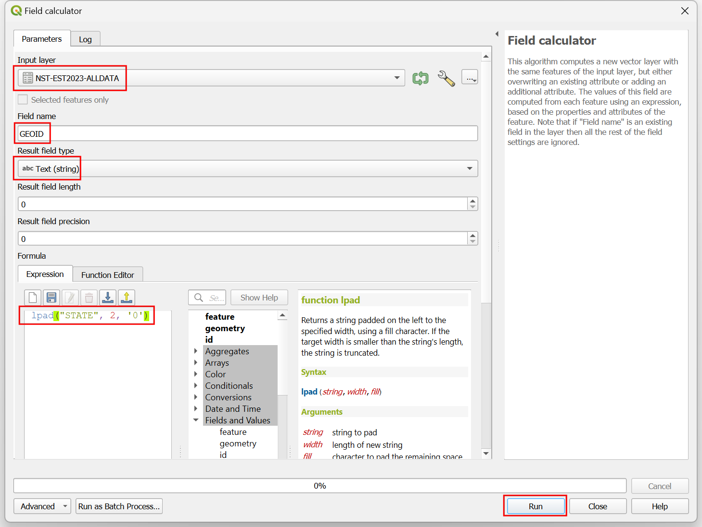

Ujaval Gandhi
Ujaval GandhiKreiranje animiranog kartograma (QGIS3)¶
Kartogram je vrsta vizuelizacije mape gde je oblik svake karakteristike iskrivljen proporcionalno promenljivoj. Kartogrami olakšavaju uočavanje velikih varijacija u podacima. Najjednostavniji metod za kreiranje kartograma je skaliranje veličine svakog regiona prema promenljivoj. Ovaj metod zadržava originalni oblik poligona i menja samo veličinu. Oni su poznati kao „Nesusedni izomorfni kartogrami <https://en.wikipedia.org/wiki/Cartogram#Non-contiguous_isomorphic_cartograms>`_. U ovom tutorijalu ćemo naučiti kako da koristimo QGIS izraze za kreiranje kartograma i kako da koristimo Temporalni kontroler za kreiranje animacije koja postepeno transformiše karakteristike u ciljanu veličinu.
Ovaj tutorijal je nadogradjen na Hans van der Kvastov odličan tutorijal za kartograme. Formula za faktor skaliranja koja se ovde koristi je iz originalnog rada Noncontiguous Area Cartograms autorke Džudi M. Olson.
Takođe možete pogledati moj YouTube video QGIS Expressions: Hidden Gems and Unexpected Possibilities koji objašnjava koncepte koji stoje iza ovog tutorijala.
Pregled zadatka¶
Uzećemo sloj država u SAD i kreirati animirani kartogram skaliranjem svake države prema broju stanovnika. Dobijena mapa će imati površinu svake države proporcionalnu njenom broju stanovnika.

Dobijte podatke¶
Zavod za popis stanovništva Sjedinjenih Država <https://www.census.gov/>`_ pruža kartografske datoteke granica zajedno sa demografskim skupovima podataka. Preuzećemo podatke i obraditi ih kako bismo kreirali sloj podataka pogodan za naš zadatak.
Posetite stranicu sa podacima „Kartografske granične datoteke - Šejpfajl <https://www.census.gov/geographies/mapping-files/time-series/geo/carto-boundary-file.html>”_ na veb-sajtu Biroa za popis stanovništva SAD. Pomerite se nadole i preuzmite šejpfajl država „cb_2018_us_state_20m.zip”. Ovaj šejpfajl sadrži poligone država koji su nam potrebni za vizuelizaciju.

Državni poligoni nemaju nikakve demografske podatke. Ove podatke je potrebno preuzeti odvojeno i spojiti sa shapefile-om za upotrebu u GIS-u. Posetite stranicu „Ukupan broj stanovnika države i komponente promene: 2020-2023 <https://www.census.gov/data/tables/time-series/demo/popest/2020s-state-total.html>“_ i preuzmite skup podataka Godišnje procene stanovništva, procenjene komponente promene stanovništva i stope komponenti promene stanovništva za Sjedinjene Države, Države, Distrikt Kolumbija i Portoriko: od 1. aprila 2020. do 1. jula 2023. koji će biti preuzet kao „NST-EST2023-ALLDATA.csv“.

Otvorite QGIS. Pronađite datoteku
cb_2018_us_state_20m.zipu QGIS Browser-u i proširite je. Prevucite i ispustite slojcb_2018_us_state_20m.shpna platno.
Novi sloj
cb_2018_us_state_20mbiće dodat na panel Slojevi. Zatim ćemo učitati CSV datoteku. Kliknite na dugme Otvori menadžer izvora podataka.

Pređite na karticu Razgraničeni tekst. Kliknite na … pored Ime datoteke i pregledajte preuzetu datoteku
NST-EST2023-ALLDATA.csv. Proširite odeljak Definicija geometrije i izaberiteBez geometrije (samo tabela atributa). Kliknite na Dodaj.

Novi sloj
NST-EST2023-ALLDATAbiće dodat u panel Slojevi. Kliknite desnim tasterom miša i izaberite Otvori tabelu atributa. Ova tabela sadrži broj stanovnika u koloniPOPESTIMATE2023. Svaka država ima jedinstveni ID u koloniSTATEkoji ćemo koristiti za spajanje ove tabele sa slojem poligona.

Kliknite desnim tasterom miša na sloj
cb_2018_us_state_20mi izaberite Otvori tabelu atributa. ID-ovi država se nalaze u koloniGEOID. Iako su brojevi isti, formatirani su kao dvocifreni broj dopunjen 0. Da bismo ih uparili sa kolonomSTATEiz naše tabele populacije, potrebni su nam slično formatirani brojevi. IzaberiteNST-EST2023-ALLDATA. Idite na . Potražite i pronađite algoritam . Dvaput kliknite da biste ga otvorili.

U dijalogu Kalkulator polja, izaberite
NST-EST2023-ALLDATAkao Ulazni sloj. UnesiteGEOIDkao Naziv polja i podesite Tip polja rezultata naTekst (string). Sada ćemo uzeti brojeve iz poljaSTATEi koristiti funkcijulpad()da kreiramo dvocifreni string dopunjen nulama. Unesite sledeći izraz i kliknite na Pokreni.
lpad("STATE", 2, '0')
Novi sloj „Izračunato“ biće dodat na panel :guilabel:„Slojevi“. Kliknite desnim tasterom miša i izaberite :guilabel:„Otvori tabelu atributa“. Imajte na umu da novokreirana kolona „GEOID“ ima ispravno formatirane identifikatore. Sada možemo da koristimo ovo polje da spojimo ovu tabelu sa slojem stanja. Potražite i pronađite algoritam :menuselection:„Vektorski opšti –> Spoji atribute po vrednosti polja“. Dvaput kliknite da biste ga otvorili.

U dijalogu Spoji atribute po vrednosti polja, izaberite
cb_2018_us_state_20mkao Ulazni sloj. IzaberiteGEOIDkao Polje tabele. Za Ulazni sloj 2, izaberite našu tabeluIzračunatoi Polje tabele 2 izaberiteGEOID. Tabela ima mnogo kolona, ali nam je potrebna samo populacija za poslednju godinu. Kliknite na dugme … za Polja sloja 2 za kopiranje i izaberite samo poljePOPESTIMATE2023. Ostavite ostale opcije na njihove podrazumevane vrednosti i kliknite na Pokreni.

Novi sloj „Spojeni sloj“ biće dodat na panel Slojevi. Pre nego što upotrebimo ovaj sloj za naš kartogram, hajde da ga ponovo projektujemo na projektovani CRS. Potražite i pronađite algoritam . Dvaput kliknite da biste ga otvorili.

U dijalogu Ponovo projektuj sloj, izaberite
Joined layerkao Ulazni sloj. Za Ciljni CRS, kliknite na dugme Izaberi CRS. Potražite CRSNorth_America_Albers_Equal_Area_Conici izaberite ga. Ovo je naš poslednji sloj, pa ćemo ga sačuvati na disk. Kliknite na dugme … pored Ponovo projektovano i izaberite Sačuvaj u datoteku….

Unesite naziv sloja kao
us_states_with_population.gpkgi izaberite Sačuvaj. Kliknite na Pokreni da biste kreirali GeoPackage datoteku sa reprojektovanim podacima.

Ovaj sloj ćemo koristiti u sledećem odeljku. Radi lakšeg korišćenja, možete direktno preuzeti kopiju gornjeg sloja odozdo:
us_states_with_population.gpkg
Izvor podataka [USCONSUS]
Procedura¶
Pokrenite novi QGIS projekat. Pronađite datoteku
us_states_with_population.gpkgu Pregledaču i proširite je. Prevucite i ispustite slojus_states_with_populationna prazno platno.

Novi sloj
us_states_with_populationbiće dodat u panel Layers. Kliknite desnim tasterom miša i izaberite Open Attribute Table. Za naš kartogram, potrebno je da koristimo gustinu naseljenosti kao promenljivu. Koristićemo vrednosti populacije iz poljaPOPESTIMATE2023. Zatvorite tabelu atributa.

Potražite i pronađite algoritam iz alata za obradu. Dvaput kliknite da biste ga otvorili.

U dijalogu Kalkulator polja, izaberite
us_states_with_populationkao Ulazni sloj. Unesitedensitikao Naziv polja. Unesite sledeći izraz da biste izračunali gustinu. Pošto funkcijaarea(@geometry)izračunava površinu u jedinici CRS-a (koja je u metrima), primenjujemo faktor konverzije da bismo je konvertovali u kvadratne kilometre. Kliknite na Pokreni.
1000*1000* "POPESTIMATE2023" / area(@geometry)
Kliknite na dugme … pored Izračunato i izaberite Sačuvaj u datoteku…. Unesite naziv sloja kao
us_states_population_density.gpkgi izaberite Sačuvaj. Kliknite na Pokreni.

Novi sloj
us_states_population_densitybiće dodat na panel Layers. Kliknite desnim tasterom miša i izaberite Open Attribute Table. Potrebno je da izaberemo Anchor obeležje u odnosu na koje će se skalirati sve ostale karakteristike. Idealno bi bilo da izaberete obeležje sa najvećom vrednošću promenljive koju želite da koristite za kartogram. Ovo će osigurati da nema preklapajućih područja. Dvaput kliknite na zaglavlje kolone density da biste sortirali tabelu po gustini. Primetićete da je najveća vrednost gustine u našem skupu podataka prilično velika u poređenju sa drugim vrednostima i da pripada prilično maloj državi. Ovo će rezultirati time da sve karakteristike budu skalirane na veoma male veličine. Možemo izabrati obeležje druge najveće gustine koje ima relativno veliku površinu i čija je gustina uporediva sa drugim karakteristikama.

U kartogramima površine, faktor skaliranja određuje koliko je smanjena površina objekta. Moramo smanjiti površinu svakog objekta tako da gustina naseljenosti objekta bude ista kao gustina naseljenosti sidrenog objekta. Formula za faktor skaliranja je odnos kvadratnog korena vrednosti objekta i kvadratnog korena vrednosti sidrenog objekta. Otvorite algoritam iz kutije sa alatkama za obradu. U dijalogu Kalkulator polja, izaberite
us_states_population_densitykao Unosni sloj. Unesitescale_factorkao Naziv polja. Unesite sledeći izraz da biste izračunali faktor skaliranja. Izraz izračunava odnos kvadratnog korena gustine objekta i kvadratnog korena gustine druge najveće vrednosti gustine. Kliknite na dugme … pored Izračunato i izaberite Sačuvaj u datoteku…. Unesite naziv sloja kaous_states_scale_factor.gpkgi izaberite Sačuvaj. Kliknite na Pokreni.
sqrt("density")/array_get(array_agg( expression:=sqrt("density"), order_by:=sqrt("density")), -2)
Novi sloj
us_states_scale_factorbiće dodat u panel Layers. Kliknite desnim tasterom miša i izaberite Open Attribute Table. Poljescale_factorsada sadrži odnos kojim svaka karakteristika mora biti skalirana da bi imala istu gustinu naseljenosti kao i sidrena karakteristika.

Za konačnu vizuelizaciju nam je potreban samo sloj
us_states_scale_factor. Izaberite preostale slojeve, kliknite desnim tasterom miša i izaberite Ukloni sloj.

Izaberite sloj „us_states_scale_factor“ i kliknite na dugme :guilabel:„Otvori panel za stilizovanje sloja“ u panelu :guilabel:„Slojevi“. Izaberite :guilabel:„Jednostavno popunjavanje“ i otvorite padajući selektor za :guilabel:„Tip sloja simbola“. Postavite :guilabel:„Tip sloja simbola“ na „Okvir: Jednostavna linija“ i izaberite :guilabel:„Boja“ po vašem izboru. Ovaj sloj simbola će biti referenca za našu mapu kada promenimo veličinu poligona.

Kliknite na dugme Dodaj sloj simbola (+). Biće dodat novi sloj simbola Jednostavno popunjavanje. Podesite Boja popunjavanja na istu boju kao i linije, a Boja crtanja na malo tamniju boju.

Zatim, otvorite padajući selektor za Tip sloja simbola i izaberite
Generator geometrijekao Tip sloja simbola. Generator geometrije nam omogućava da izmenimo geometriju za renderovanje pomoću izraza. Kliknite na dugme Kreator izraza.

Koristićemo funkciju scale() koja menja veličinu date geometrije pomoću faktora skaliranja po X i Y osi. Za naš kartogram, želimo da promenimo veličinu svakog poligona prema odnosu njegove populacije i najveće populacije. Unesite sledeći izraz da biste primenili ovo skaliranje i kliknite na OK.
scale( @geometry, "scale_factor", "scale_factor", centroid(@geometry) )
Videćete da su poligoni država sada veličine prilagođene proporciji stanovništva svake države u odnosu na najveću populaciju. Mnoge velike države sa niskom gustinom naseljenosti sada su mnogo manje od svoje originalne veličine. Primetićete da su poligoni nepravilnih oblika van centra nakon skaliranja. To je zato što je sidrena tačka skaliranja težište geometrije, što je često reprezentativna tačka za poligon. Hajde da ažuriramo naš izraz da bismo ovo popravili. Kliknite na dugme Kreator izraza.

Funkcija scale() uzima opcioni parametar za određivanje centralne tačke skaliranja. Koristićemo funkciju pole_of_inaccessibility() da pronađemo reprezentativnu sidrenu tačku za svaki poligon. Ovo je slično centroidu, ali je garantovano da je unutar poligona, dok centroid može biti van za određene oblike. Ažurirajte izraz kao što je prikazano ispod, koji izračunava pol nepristupačnosti geometrije sa malom vrednošću tolerancije i kliknite na OK.
scale( @geometry, "scale_factor", "scale_factor", pole_of_inaccessibility(@geometry, 100) )
Sada će skalirani poligoni imati mnogo bolji položaj. Vidimo još jedan problem. Mnogi objekti u sloju su Multipoligoni, tj. imaju više od jednog dela. Takvi objekti imaju 2 ili više poligona koji su deo iste geometrije. Sa našim trenutnim izrazom, oba su skalirana sa istom sidrenom tačkom izračunatom iz kombinovane geometrije. Ovo nije idealno. Na primer, veliki objekat sa više ostrva treba skalirati tako da svako ostrvo bude skalirano sa svojom centralnom tačkom. Da bismo ovo popravili, ažuriramo naš izraz da iterira preko svakog dela geometrije i skalira ga sa svojim centrom. Kliknite na dugme Kreator izraza.

Ovde koristimo funkciju array_foreach() da bismo iterativno prešli preko svakog dela geometrije i generisali njihove skalirane verzije. Na kraju, funkcija collect_geometries() kombinuje svaki skalirani deo u jednu geometriju sa više poligona. Ažurirajte izraz kao što je prikazano ispod i kliknite na OK.
collect_geometries( array_foreach(generate_series(1, @geometry_part_count), scale(geometry_n(@geometry,@element), "scale_factor", "scale_factor", pole_of_inaccessibility(geometry_n(@geometry,@element), 100) ) ) )
Rezultat je mnogo bolje skaliranje za višedelne elemente.

Naš kartogram je spreman. Ova mapa prikazuje koncentraciju stanovništva u istočnoj polovini SAD i upadljivo odsustvo stanovništva u državama zapadno od reke Misisipi.

Možemo napraviti poboljšanu vizuelizaciju kreiranjem animacije koja polako transformiše originalni prikaz u konačnu veličinu. Kliknite na dugme Vremenska kontrolna tabla sa ikonom sata u Traka za navigaciju mape. Izaberite dugme Animirana vremenska navigacija.
Podrazumevani Opseg animacije biće popunjen prozorom od 24 sata u koracima od 1 sata. Ovo je u redu za naš slučaj upotrebe jer ćemo dobiti 24 kadra animacije. Možete ovo podesiti ako želite sporiju/bržu animaciju. Kliknite desnim tasterom miša na sloj
us_states_with_populationi izaberite Properties.
Izaberite karticu Temporal i omogućite Dynamic Temporal Control. Ovaj sloj će biti ažuriran pomoću izraza tako da ga ne moramo ovde konfigurisati. Samo izaberite
Redraw Layer Onlytako da se sloj osvežava nakon svakog vremenskog koraka i prikazuje sa ažuriranim vrednostima iz izraza.

Hajde da ažuriramo naš izraz Generatora geometrije da koristi korake vremena animacije i postepeno skalira geometriju. Kliknite na dugme Otvori panel za stilizovanje slojeva u panelu Slojevi. Izaberite Generator geometrije, a zatim dugme Kreator izraza.

Ovde želimo da počnemo sa faktorom skaliranja od 1 i završimo sa konačnom vrednošću faktora skaliranja za karakteristiku u polju
scale_factor. Koristimo funkciju scale_linear() koja uzima vreme trenutnog vremenskog koraka i izračunava faktor skaliranja koristeći vreme početka i završetka. Ažurirajte izraz kao što je prikazano ispod i kliknite na OK.
collect_geometries( array_foreach(generate_series(1, @geometry_part_count), scale(geometry_n(@geometry,@element), scale_linear( epoch(@map_start_time), epoch(@animation_start_time), epoch(@animation_end_time), 1, "scale_factor"), scale_linear( epoch(@map_start_time), epoch(@animation_start_time), epoch(@animation_end_time), 1, "scale_factor"), pole_of_inaccessibility(geometry_n(@geometry,@element), 100) ) ) )
Nazad u panelu Temporal Controller, kliknite na dugme Play da biste videli animaciju. Trebalo bi da vidite kako se oblik svakog poligona postepeno skalira nakon svakog kadra.

Kada budete zadovoljni konfiguracijom, možemo da izvezemo animaciju. Kliknite na dugme Izvezi animaciju.

U dijalogu Izvoz animacije mape kliknite na … pored Izlazni direktorijum i pregledajte bilo koju fasciklu na računaru. Zadržite sve ostale opcije na njihovim podrazumevanim vrednostima i kliknite na Sačuvaj.

Pojedinačni kadrovi animacije biće izvezeni kao slike. Možemo da napravimo video ili animirani GIF od ovih kadrova. Preporučujem korišćenje veb stranice ezgif.com koja vam omogućava da lako kreirate GIF-ove od pojedinačnih slika. Posetite Ezgif Animated GIF Maker. Pregledajte izvezene kadrove animacije i kliknite na Otpremi datoteke!.

Konfigurišite opcije GIF-a podešavanjem Vreme kašnjenja na
5. Označite efekat okviri prelaznog pomeranja i podesite Kašnjenje postepenog pomeranja i Broj postepenog pomeranja na2. Kliknite na Napravi GIF!/

Kliknite na dugme sačuvaj da biste preuzeli animaciju kao GIF datoteku.

If you want to give feedback or share your experience with this tutorial, please comment below. (requires GitHub account)